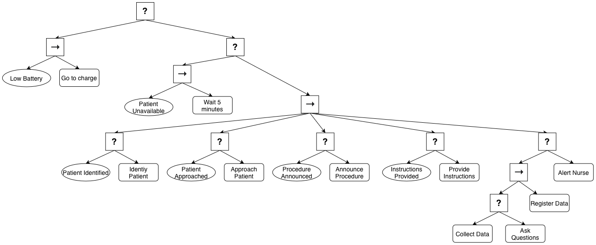
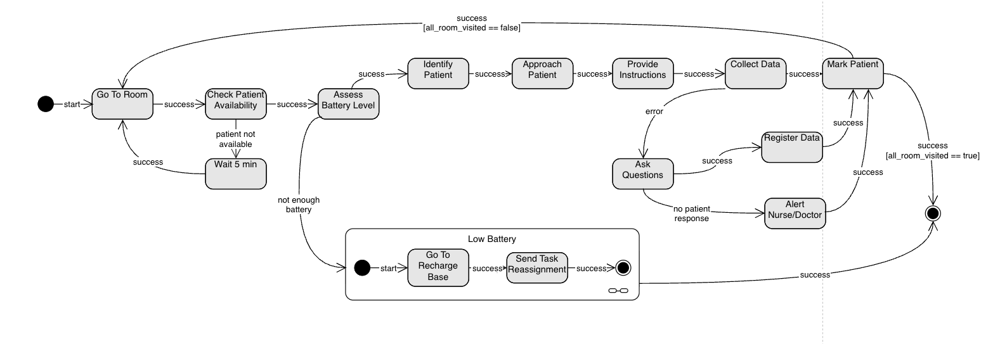
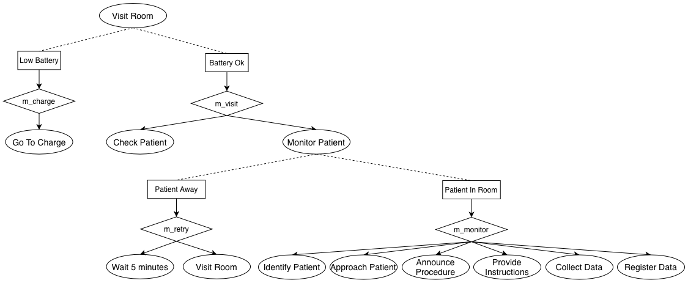
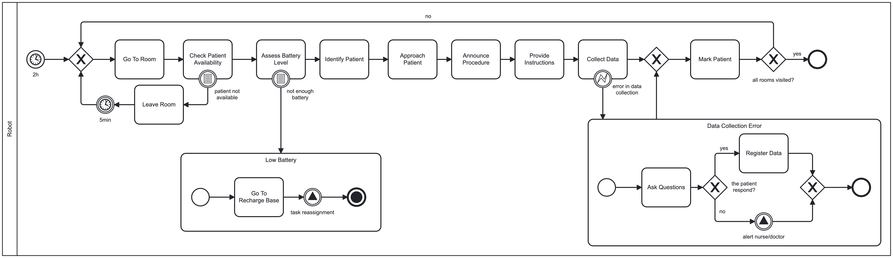

Every two hours, all patient's vital signs should be checked. Therefore, the assigned robot should visit every occupied room. Before entering the room, the robot must check if the patient is available for vital signs checking, and if there is enough battery to perform all the tasks inside the room. Hospital rooms may have one or more beds. So the robot has to identify the correct patient either by asking or by scanning the patients barcode. If the patient is not available, the robot should come back in 5 minutes. If there is not enough battery, the robot should recharge and the tasks need to be reassigned. Once inside the room, the robot should approach the patient, announce the procedure to be performed, and provide instructions to the patient. The failure of collecting any necessary vital signs should trigger a set of questions to assess the patient status for those signs that were failed to be collected. In case of non-response, an alert should be sent to the responsible nurse/doctor. Once the patient is checked, the robot should mark it as done and proceed to the next room.
Askarpour, Mehrnoosh, et al. Robomax: Robotic mission adaptation exemplars. 2021 International Symposium on Software Engineering for Adaptive and Self-Managing Systems (SEAMS). IEEE, 2021.



